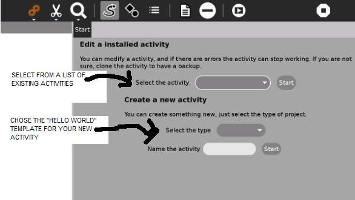
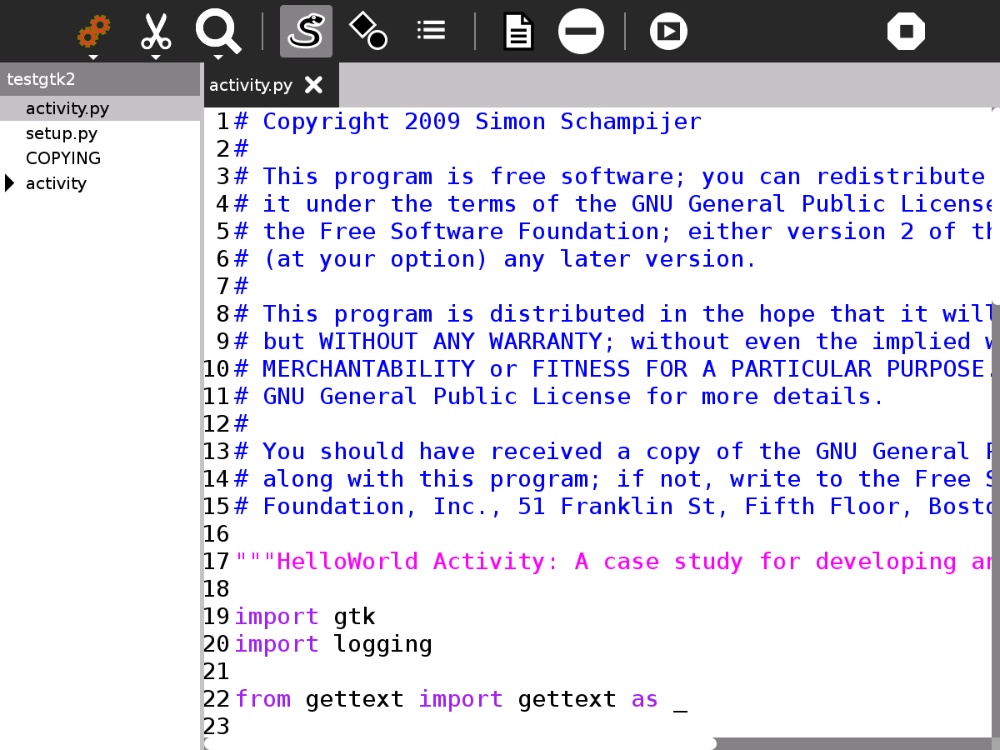
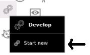
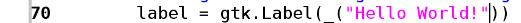
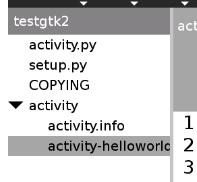
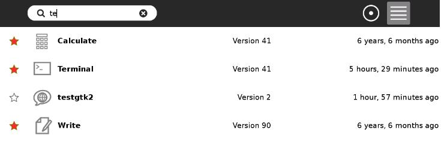
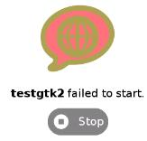
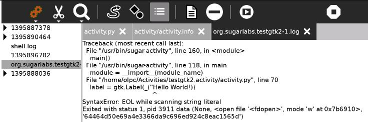

Develop¶
About Develop¶
Develop allows you to edit existing Activities or create new ones. It allows the viewing and editing of multiple files and gives easy access to error logs. It includes templates for a number of sample “Hello World!” Activities.
Where to get Develop¶
Develop activity is available for download from the Sugar Activity Library: Develop
The source code is available on GitHub.
Using Develop¶
You get the screen below the first time you start Develop and every time you Start New but not if you resume a project. It gives the option of editing an existing Activity or creating a new one from a “Hello World!” template. It is recommended that beginners create a new Activity.
There are 4 “Hello World!” templates to choose from:
Gtk2
Gtk3 (requires Sugar 0.96 or above to run the Activity you create)
Sugargame
Web (requires Sugar 0.100 or above to run the activity you create)

The main screen is shown below. In this case, a new Activity called testgtk2 has been created from the gtk2 template. The left pane shows the files and directories that comprise the Activity and the right pane shows the contents of its main file, activity.py


Toolbars¶
From left to right, the toolbar buttons have the following functions:
Home
The title of the project
Edit the Journal description
Sharing (disabled)
Create a bundle, use the bundle to install your Activity on other laptops
View
Switch to dark or light theme
Zoom in
Zoom out
Edit
Undo
Redo
Copy
Paste
Search
Search box
Search previous
Search next
Show source
The left hand pane shows the files and directories that comprise your Activity.
Show file symbols
The left hand pane shows the classes, functions and variables in the file on the right.
Show log files
The left pane shows the log files which contain error messages from running your Activity.
Create an empty file
Your Activity already comprises a number of files, this adds an additional empty file in the current directory.
Remove file
Deletes the most recently viewed file, the one displayed in the right pane.
Run activity
Runs your activity.
Stop
Quits the Develop Activity.
Tutorial - creating your Activity¶
Open Develop, start new

Create a new Activity, this is safer than editing an existing Activity. You are offered 4 Activity templates, Gtk2, Gtk3, Sugargame and Web, some of these templates are not compatible with all Sugar versions, Gtk2 should be compatible.
Select the type Gtk2
Name the Activity testgtk2
Start
Press the Run activity button on the toolbar, your testgtk2 Activity will run, it prints Hello World!. (If you look at your Home screen you have a new Activity called testgtk2.)
Editing your Activity¶
Stop testgtk2 and return to Develop. Edit line 70 of activity.py. It contains the text “Hello World!”, change this text but be careful only to change the text within the quotation marks. Press the Run activity button, the Activity now displays the new text.

Changing the icon¶
Shown in the left hand pane is the directory activity with a triangle next to it pointing right. Click on it, the triangle points down and you can see its contents, open activity-helloworld.svg

Line 11 defines the circle of the world in the icon. Change stroke-width to “6.5”. You need to restart the laptop to see the changes, the circle is now thicker.

Changing the version number¶
The Home view, List view shows the version number of all the installed Activities. The version number discriminates between older and newer versions of an Activity. It is used to tell if you are using the latest version. Sometimes the latest version has a bug and you want to go back to an earlier known good version.
Look in your Home view List view and you will see that testgtk2 is version 1. To alter the version number, edit activity.info line 6 which shows the activity_version=1 , change it to 2.
You may need to restart the laptop to see the changes.

Installing your Activity on another computer¶
Press the Create bundle button on the home toolbar, this creates a .xo bundle in the Journal. Copy this to another laptop to install your Activity.
Using the Log files to find errors¶
Log files are created when Activities run, they also are created by other processes. They list software errors among other data and can help diagnose software problems.
Assume you made a typing error, you accidentally deleted the closing quote mark “ in activity.py line 70 when you were editing “Hello World!”. The activity would not run, you might get an error like this:

Click on the Show log files button , the left hand pane will show the list of logfiles. Because our Activity is named testgtk2, we are looking for the file org.sugarlabs.testgtk2. If you have started testgtk2 multiple times then there are multiple logfiles. Click on org.sugarlabs.testgtk to read the logfile. The error message tells that it is line 70 of activity.py , in the string “Hello World!, it got confused at the opening quote. It got to the end of line (EOL) while scanning the string.

The Log Activity can also be used to view log files.
Sugargame¶
Sugargame, based on Pygame makes it easy to create games. See pygame.org
To create a game, start a new Develop project but select Sugargame rather than Gtk2. If you run the Activity created, it prints Hello World on a black background.
Look at the file game.py, there are a number of simple changes you can make:
BLANCO =(255, 255, 255) #this sets the red, green and blue values for the white text``
NEGRO = (0, 0, 0) #this sets the R G B of the black background``
fuente = pygame.font.SysFont(None, 48) #48 is the text size``
texto = fuente.render('Hello world!', True, BLANCO, NEGRO) # change Hello world``
pantalla.blit(texto, ((x / 2) - (x / 10), (y / 2) - (y / 10))) #the location on the screen``
Read the documentation at pygame.org, there are lots of exciting things to try. For example, change the line that starts with pantalla.blit to:
pantalla.blit(texto, pygame.mouse.get_pos())``
the text will follow the mouse. Or change this line to:
pygame.draw.circle(pantalla,BLANCO, pygame.mouse.get_pos(),20,0)``
and a circle follows the mouse.
Going further¶
For more on making Sugar Activities see the ebook http://en.flossmanuals.net/make-your-own-sugar-activities/
For editing icons use Inkscape http://www.inkscape.org
Pygame http://www.pygame.org/docs
Videos¶
Demo of Develop version 40: https://www.youtube.com/watch?v=SChweH6snvw
Where to report problems¶
Please report bugs and make feature requests at develop-activity/issues.